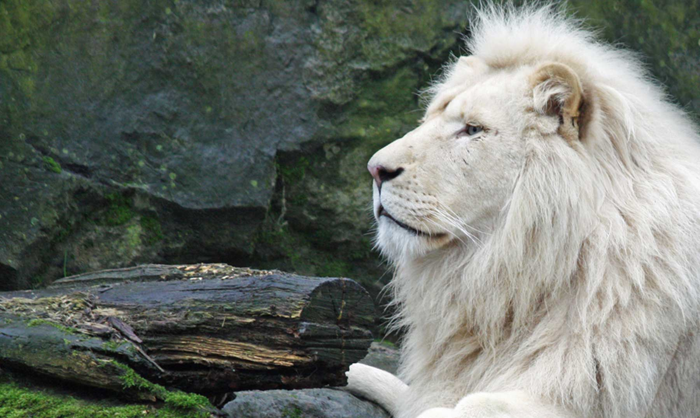

Sea bienvenido a nuestra pagina web, en este contenido le explicaremos todo sobre el león, su hábitat, la ubicación geográfica, hábitos alimenticios y repoductivos y su estado de conservación.
Descripción del León
El león es un mamífero cuadrúpedo de la familia de los félidos. Desde los albores de la humanidad, ha sido uno de los animales más
admirados por su fiereza y fortaleza, y por esas mismas razones temido y cazado.
Los leones son actualemente una especie amenazada por la actividad del hombre, y sus números han disminuido dramáticamente desde la
invención de las armas de fuego. Los machos pueden alcanzar pesos de 160-260kg, y 120-182kg las hembras, de longitud rondan los tres metros,
de la cabeza hasta la punta de la cola.

Origen de los leones
Los leones son parientes con otros grandes depredadores felinos como el tigre y el jaguar, provenientes del Asia Central hace
3.5 millones de años. Hace 1 millon de años, surgió en Africa, mediante en la evolución se fué separando del resto durante el
Pleistoceno. Durante este periodo se extendió a América, Europa, surgiendo de esta manera el origen de otras especies hoy en día
extintas. En un tiempo fué considerado como objeto de diversión, pasando desde los juegos romanos, hasta entretención de circo.
Actualmente es considerada especie vulnerable y susceptibles de extinción. En estas últimas décadas la población ha sufrido
un declive entre un 30% y 50%, convirtiendo su vida no viable en el exterior de reservas ecológicas.
 |
 |